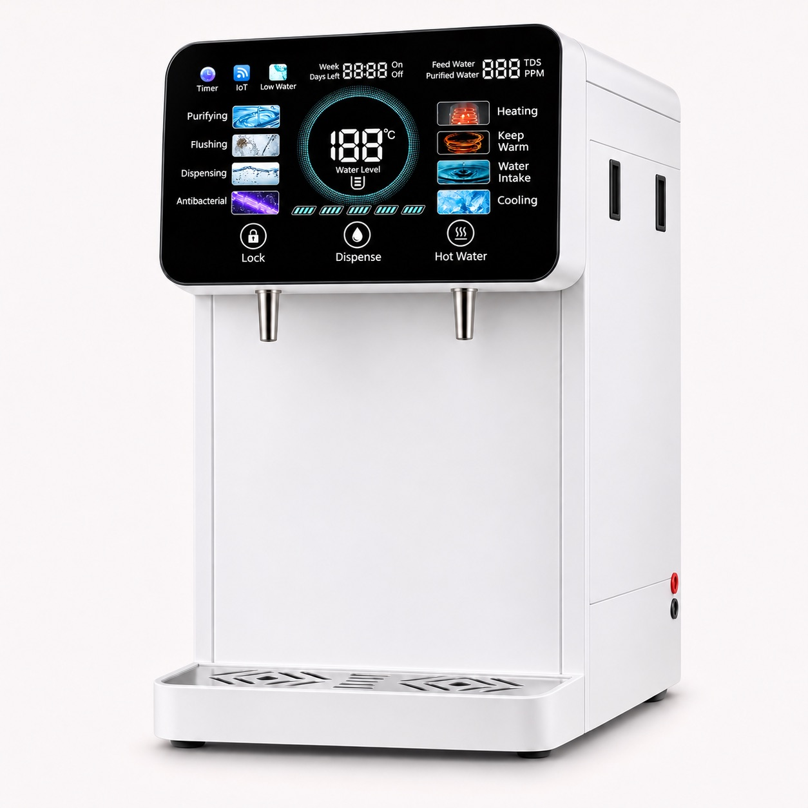
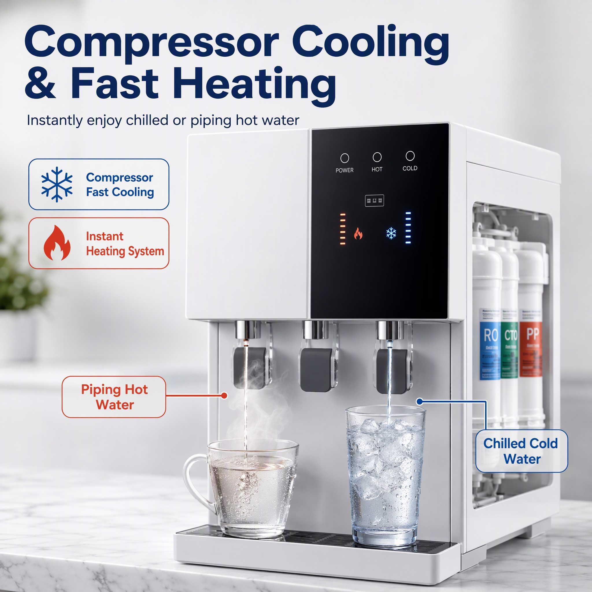
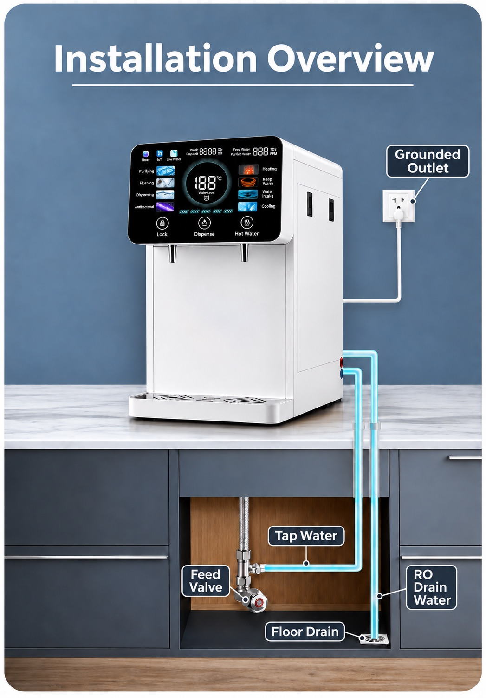

Настольный пурифайер с обратным осмосом. Горячая и холодная вода. Для вашего рынка.
Проточный пурифайер с обратным осмосом, компрессорным охлаждением, большим интеллектуальным дисплеем и двумя или тремя выходами воды. Выберите 100 или 200 GPD и обсудите комплектацию для ваших клиентов.
Не знаете, какую комплектацию выбрать? Опишите применение, и мы поможем составить спецификацию.

Визуализация английского дисплея · показанные дополнительные функции зависят от комплектации.
ЗАВОДСКИЕ ВАРИАНТЫ ДИЗАЙНА
Чёрный и белый варианты панели
Эти пять заводских иллюстраций показывают варианты с тремя выходами. Для заказа можно обсудить два или три выхода. Справочные изображения не определяют функции и характеристики заказа.
Деталь передней панелиИндикаторы состоянияВарианты производительности мембраныУстановка на столешнице

Подача горячей и охлаждённой воды
4 ступениPP · CTO · RO · T33
100 / 200Варианты мембраны, GPD
295 ммШирина корпуса
TDSИндикация параметров воды
ПОНЯТНЫЙ ВЫБОР
Одна платформа. Разные задачи покупки.
Для брендов и дистрибьюторов
Создайте OEM-линейку настольных пурифайеров с обратным осмосом на основе компактного корпуса, компрессорного охлаждения и настраиваемого дисплея управления. Обсудите с заводом собственную марку, упаковку, производительность мембраны и требования целевого рынка.
Для дома, офиса и проектов
Планируйте точку горячей и холодной питьевой воды там, где доступны водопровод, дренаж и электричество. Укажите ожидаемое число пользователей и пиковый спрос для проверки комплектации.
КОМПЛЕКТАЦИЯ
Начните с известных требований.
Компрессорное охлаждение, интеллектуальное управление и измерение TDS составляют предлагаемую экспортную комплектацию. Дополнительные функции согласуются для вашего заказа.
Количество и подробные требования можно добавить в форму запроса.
100 GPD или 200 GPD?
Эти варианты обозначают номинальную суточную производительность мембраны, а не мгновенный расход из крана. Фактическая производительность зависит от исходной воды и итоговой комплектации.
Что можно настроить?
Можно обсудить брендирование, язык дисплея и дополнительные функции. IoT и антибактериальная функция опциональны; реализация, совместимость и подтверждающие протоколы испытаний согласуются до заказа.
Что должно быть подтверждено в предложении?
Электропитание и вилка, характеристики горячей и холодной воды, объёмы хранения, расходные материалы, количество, срок поставки и документация для целевого рынка.
ИНТЕЛЛЕКТУАЛЬНЫЙ ДИСПЛЕЙ
Следите за состоянием. Выбирайте интерфейс.
В этой модели доступно измерение TDS. Английские надписи поясняют режимы работы; язык экрана и дополнительные функции можно адаптировать к проекту.
Пример настраиваемого дисплея. Числа со всеми включёнными сегментами, например 188°C и 888, служат иллюстрацией, а не результатами измерений или заявленными характеристиками. Индикаторы IoT и антибактериальной функции относятся к опциям. Одного TDS недостаточно для оценки безопасности питьевой воды.
Все обозначения дисплея
Таймер · IoT · Мало воды · Неделя · Осталось дней · Вкл. / Выкл. · Исходная вода · Очищенная вода · TDS / PPM · Очистка · Промывка · Подача · Антибактериальная функция · Нагрев · Поддержание тепла · Набор воды · Охлаждение · Уровень воды.
ЧЕТЫРЁХСТУПЕНЧАТЫЙ ОБРАТНЫЙ ОСМОС
Удобный доступ к фильтрам. Понятное планирование обслуживания.
Полипропиленовый механический картридж PP
Предварительная фильтрация взвешенных частиц.
Угольный картридж CTO
Предварительная угольная очистка перед мембраной RO.
Мембрана RO
Разделение обратным осмосом; выберите 100 или 200 GPD.
Угольный картридж T33
Финишная угольная обработка для улучшения вкуса.
Интервалы замены зависят от качества воды, использования и выбранных картриджей. Запросите совместимый комплект замены и инструкции по обслуживанию вместе с предложением.
Ретушированный заводской образец. Физическое расположение слева направо: PP, CTO, T33, RO. Внизу показан повысительный насос. Расположение не является схемой потока воды; итоговая внутренняя компоновка зависит от комплектации.
ХАРАКТЕРИСТИКИ
Компактные размеры. Практичные детали.
E500-TS-1 (B/W) — подтверждённые параметры выбора
Тип изделия
Настольный пурифайер с обратным осмосом и подключением к водопроводу
Охлаждение
Компрессорное охлаждение с интеллектуальным управлением
Варианты мембраны RO
100 GPD / 200 GPD
Фильтрация
PP, CTO, RO и T33
Размеры (Ш × Г × В)
295 × 440 × 520 мм
Высота зоны подачи
245 мм (справочный чертёж)
Выходы воды
Два / Три
Дисплей
Большой интеллектуальный дисплей с измерением TDS
Подключения
Водопровод, дренаж RO и электропитание с заземлением
Варианты OEM
Брендирование, упаковка, локализация дисплея; дополнительные функции по согласованию
Подтвердите напряжение, номинальную мощность, объёмы баков, диапазоны температур и пиковую производительность подачи в спецификации заказа.
ПЕРЕД УСТАНОВКОЙ
Предусмотрите три подключения.
Это настольный пурифайер с обратным осмосом и подключением к водопроводу. Требуются подача водопроводной воды, отдельный отвод концентрата RO и подходящая розетка с заземлением.
Схема подключений · расположение портов зависит от заказанной комплектации.
01 · Подача воды Подключение водопровода к указанному входу.
02 · Отвод концентрата RO Отдельная линия концентрата к подходящему дренажу.
03 · Электропитание с заземлением Электропитание и вилка должны соответствовать заказу.

Пример установки. Предусмотрите боковой доступ к фильтрам, трубкам и вентиляции. Соблюдайте прилагаемую инструкцию и местные требования.
ВОПРОСЫ ПОКУПАТЕЛЕЙ
Перед запросом предложения.
Требуется ли подключение этого настольного пурифайера к водопроводу?
Да. Устройство подключается к водопроводу, отдельному дренажу концентрата RO и подходящему электропитанию с заземлением. Это не диспенсер с ручным наполнением без монтажа.
Можно ли заказать 100 GPD или 200 GPD?
Доступны оба варианта мембраны. GPD — номинальная суточная производительность мембраны, а не скорость подачи из крана. Результат зависит от исходной воды и итоговой комплектации.
Используется ли компрессорное охлаждение?
Предлагаемая экспортная комплектация предусматривает компрессорное охлаждение с интеллектуальным управлением. Особые требования обсудите с заводом.
Поставляете ли вы пурифайеры OEM или под собственной маркой?
Да. Обсудите бренд, упаковку, язык дисплея, количество и целевой рынок. Минимальный заказ, срок поставки и документация подтверждаются в предложении.
Входят ли TDS, IoT и антибактериальная функция в комплектацию?
Измерение TDS доступно. IoT и антибактериальная функция опциональны; показанный интерфейс служит примером. Подтвердите реализованные функции и документацию для вашего заказа.
Какие сведения нужны для предложения?
Начните с контактных данных и назначения. По возможности добавьте вариант мембраны, примерное количество, место поставки и требования к настройке. Можно запросить помощь с выбором комплектации.
Как планировать замену фильтров?
Запросите совместимый комплект PP, CTO, RO и T33 и инструкции по обслуживанию. Интервалы замены зависят от качества исходной воды, использования и заказанных картриджей.
ПОДБЕРЁМ ВАШ E500-TS-1
Ваш рынок. Ваша комплектация.
Сообщите применение, количество и место поставки. Мы поможем выбрать комплектацию.